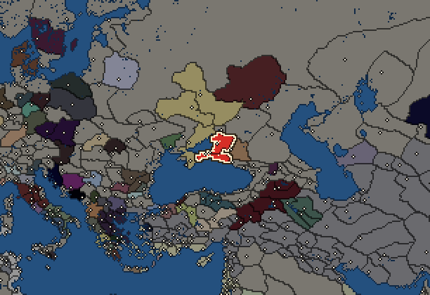
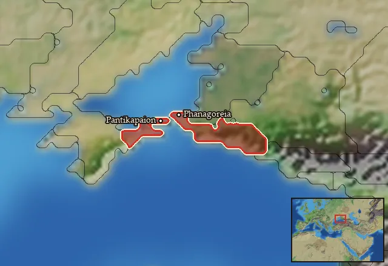

RTR: Imperium Surrectum
RTR: Imperium SurrectumBosporans


- difficulty Medium
- Western Hellenistic culture
- believes
 Bosporan
Bosporan - 3 settlements
- capital Pantikapaion
- 16,500 manpower
- 5 characters
- 24 faction units
- 426 regional units
The campaign brief
"And are not we too sailing to the same places as they, with grain among all our other provisions? What wrong are they doing us in carrying food thither?" – Herodotos (VII. 147)
My forefathers hugged the outer shores of Asia, proud Milesians all. Where none dared cross the cursed waters of Pontus Euxeinos, we followed the trail of Heracles and call this sea our own! The great city of Pantikapaion was founded on the ruins left behind by the ancient Cimmerians, after whom it is reputed the narrow passage leading to Lake Maiotis was called Kimmerios Bosporos. Hah, we even use their old ditch to our own advantage, a useful means to keep out the filthy barbarians that roam these lands on the very fringe of civilisation! We can justly regard our realm as the pearl of the Black Sea. Even the despot Xerxes – accursed be his name – beheld our mighty fleet with envy; his mouth watering for the endless stream of golden grain flowing towards the Aegean and beyond. Athens might be proud, but where would she be without us, the great Bosporans? We held her fate in our hands, fed her for ages in exchange for her silver and gold! If only these effeminate fools, the degenerate Ptolemies, could be kept away from our markets, our wealth…
I am Παιρισάδης or Pairisades, the second of that name, son of the great Satyros from the House of Spartokos, or Leukonids. Some might call us tyrants, most know better. Rivalling the great Lysimachos in enlightened wisdom, valour and opulence, we straddle the gap between Greek and barbarian, Sindian and Hellene! An iron youth fit for the gods was my faith, being forced to flee from the wretched hands of my uncle Eumelos who killed almost our entire family after being victorious in the great war against his own siblings, Prytanis and my beloved father Satyros. The fool almost destroyed our blessed kingdom! I, riding out of the city on horseback, took refuge with the noble Agarus, king of the Scythians.
Soon, – Pan be praised – after having been king for no more than five years and an equal number of months, my wretched uncle died, suffering a very strange mishap. The prophets had already foretold his death in a house that was on the move. As my uncle was returning home from Sindicê and was hurrying for a sacrifice, riding to his palace in a four-horse carriage which had four wheels and a canopy, it happened that the horses were frightened and ran away with him. Since the driver was unable to manage the reins, my wretched uncle, fearing lest he be carried to the ravines, tried to jump out; but his sword caught in the wheel, and he was dragged along by the motion of the carriage and died on the spot [Diodorus Siculus XX 25-26]. Thus ended the reign of Eumelos, and henceforth his son Spartokos, my dear cousin, ruled in his stead.
My cousin was ever dearer to me for him being barren of a son that he could call his own. The gods must have looked upon our great Bosporan Kingdom in favour – who else than me, raised among the fierce barbarians of the steppes, proud bearer of the blood of Heracles and Odysseus from the ancient shores of Miletus, could be more fit to lead our proud people to new glory? For fourteen years I have reigned, slaughtering the filthy pirates who ravaged our trade. So far, I have only scratched the very surface of ambition, itching to carry the war to our neighbours, enemy and friend alike, glorious spoils and fat lands for the taking! I am Pairisades. All will tremble and feel my righteous wrath!
Starting settlements
Bosporans begins with 3 settlements and 16,500 manpower.
| Settlement | Region | Size | Manpower | Already built | Settlement | Region | Size | Manpower | Already built |
|---|---|---|---|---|---|---|---|---|---|
| Pantikapaion (capital) | Kimmerikos Bosporos | city | 7,000 | 13 buildings | Phanagoreia | Phanagoreion | large town | 6,000 | 10 buildings |
| Azara | Maiotis | town | 3,500 | 3 buildings |
What is already built in each settlement
Pantikapaion, in Kimmerikos Bosporos: Treasury, Governor's Palace, Small Stone Wall, Homeland, Region Information Scroll, Paved Roads, Local Market, Shipwright, Slave Auction (Urban), Vineyard (Rural), Basin Irrigation (Crops), Barracks and Armoury, Sewers (Sanitation)
Phanagoreia, in Phanagoreion: Governor's Villa, Wooden Palisade, Homeland, Region Information Scroll, Roads, Local Barter, Trade Port, Slope Pasturing (Husbandry), Training Grounds, Cisterns (Sanitation)
Azara, in Maiotis: Governor's House, Direct Rule, Region Information Scroll
Starting diplomacy
Allied with (1):  Olbia
Olbia
Trade agreements with (1):  Olbia
Olbia
At peace with every other faction.
Like every faction, it is also at war with the  Free Peoples, who hold every settlement no faction does.
Free Peoples, who hold every settlement no faction does.
Homeland
Bosporans's homeland is 2 regions. Only there can it install the Homeland government (more on homelands).

Starting characters
| Name | Role | Age | Name | Role | Age | Name | Role | Age | Name | Role | Age |
|---|---|---|---|---|---|---|---|---|---|---|---|
| Pairisades | General | 40 | Spartokos | General | 18 | Apollodoros | General | 45 | Leukon | General | 16 |
| Bromis | General | 35 |
Faction mechanics
From the game's own guide. See also the other game guides.
Special Mechanics
The Bosporan Kingdom has a mercenary centre in Pantikapaion, check its Region Information Building for more details.
Military reforms
Bosporan Kingdom has three reforms.
Bosporan reforms 1 requirements: Have at least 1 huge city.
Unlocks: Thureophoroi Cavalry
Bosporan reforms 2 requirements: Fight 30 battles
Unlocks: Bosporan Cataphract
Bosporan reforms 3 requirements: 3 huge cities
Unlocks: Bosporan Heavy Swordsmen
Reforms
For every faction: Military innovations have arrived!, Second wave of military innovations have arrived!.
Units you can recruit
The same as in the main campaign.